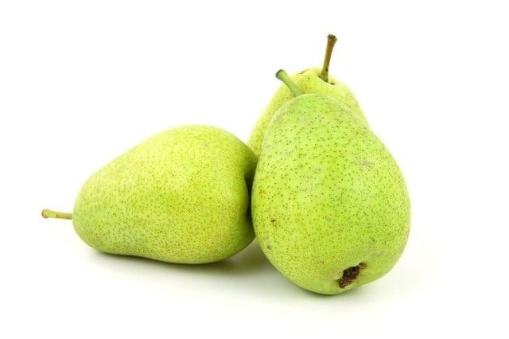
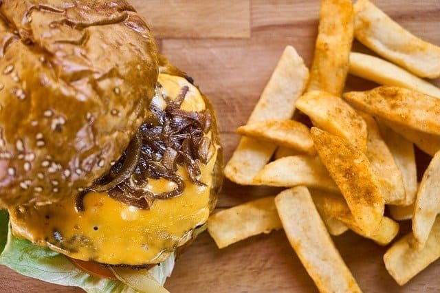
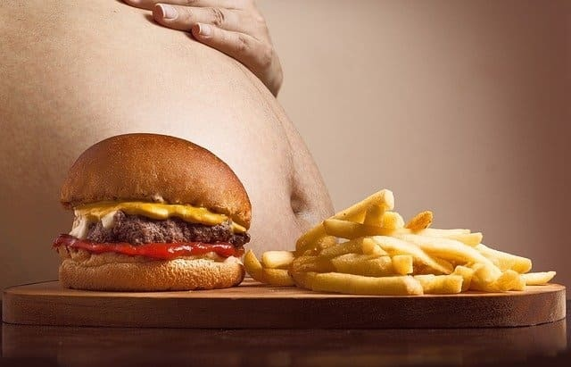

胆石症の鍼灸
胆のうや胆管に結石が生じ、脂っこい食後の右肋骨下やみぞおちの強い痛みを引き起こします。
まず知っておきたい要点と改善の流れ
胆のうや胆管に結石ができる状態の総称で、胆のう結石・総胆管結石・肝内結石に分けられます。胆汁中のコレステロール、ビリルビン、カルシウムなどの成分バランスが崩れて結晶化することが原因です。高脂肪・高カロリー・低食物繊維の食事、肥満、糖尿病、中高年女性、急激な減量、加齢、大腸菌感染や肝硬変、遺伝的要因などが関与します。（公式解説）
このようなお悩みはありませんか？
- ✓脂っこい食事の後や夜間に右肋骨下やみぞおちが強く痛む
- ✓痛みが右肩や背中へ広がり、数十分から数時間続く
- ✓発熱や悪寒、吐き気・嘔吐、黄疸などの症状がある
- ✓健診で胆石を指摘され、再発や悪化が気になっている
当院の施術アプローチ・改善の流れ
なぜ鍼灸で改善へ向かうのか？（作用機序の図解）
胆石症に対する鍼灸は、脳腸相関と迷走神経反射による胃腸運動の調整機序を通じて、お体本来の回復力を引き出します。

胃腸機能と深く結びつく四肢・腹部の経穴を刺激し、体性感覚神経から中枢へ信号を送ります。
脳幹を経由した体性-内臓反射により、副交感神経（迷走神経）経由で胃腸の働きを調整します。
弱まったぜん動を促す一方、下痢型の過剰な収縮や内臓知覚過敏は穏やかに鎮静します。
ストレスで乱れにくい胃腸の土台を整え、胃もたれ・便通異常・吐き気の軽減を目指します。
院長YouTube解説・関連動画
公開日：２０２１年 ２月２３日
更新日：２０２１年 ５月 １５日
本日は胆石症について解説させていただきます。

☆本記事の内容
- •胆石症とは
- •胆石症の原因
- •胆石症の症状
- •胆石症の改善方法
- •胆石症の予防
- •胆石症は、胆のうや胆管に石ができることで起こる症状の総称
- •胆石症は様々な原因が考えられている
- •特徴的な症状は、右側の肋骨の下辺りやみぞおちに感じる激しい痛み
- •胆石症の改善には手術が基本
- •バランスの良い食事や適度な運動、規則正しい生活を心がける
- •胆石症の改善例
銀座そうぜん鍼灸院の宗前です。
このページを書いている私は、鍼灸師として１３年、担当した利用者様数８０，０００人を誇り、病気の休職者３００人を社会復帰できるまで回復させてきた実績があります。
胆石症は様々な原因が考えられている

胆石症は様々な原因が考えられています。原因として考えられていることは、元々持っている体質や大腸菌の感染、赤血球が壊されることで起こる溶血性疾患、肝硬変、食物繊維やタンパク質が少なく脂質や糖質が多い食事、食事から起こる肥満などです。
年齢を重ねることによって発症する確率は高くなる傾向にあります。発症する年齢で多い年代は、中高年以上です。特に１番多いとされているコレステロール結石は中年以降の肥満の女性に多いと言われています。
胆汁は水分、コレステロール、ビリルビン、胆汁酸やレシチンなどによってできています。このバランスが崩れることによって胆汁が結晶化し、胆石ができると考えられています。
近年、日本人に胆石の人が増えた理由としては、主に2つの原因が考えられます。１つ目は食生活が欧米化したためで、2つ目は、技術の進歩によって無症状の胆石や小さな胆石も発見できるようになったためです。
胆石症は、胆嚢や胆管に石が形成される病気です。その原因はいくつかあり、遺伝的要因、食生活、生活習慣、肥満、糖尿病などが関与しています。
遺伝的要因：胆石症は家族内で発症することがあります。これは遺伝子が胆汁酸の分泌やコレステロール代謝に影響を与えるためです。
食生活：食生活も胆石症の原因の1つです。高脂肪、高カロリー、低繊維の食事はコレステロールの過剰な摂取につながり、胆石のリスクを高めます。また、食事によって摂取されるコレステロール量が増えると、胆嚢内のコレステロール濃度が上昇し、結晶化して石を形成する可能性が高まります。
生活習慣：運動不足や過度のストレスも胆石症のリスクを高めます。適度な運動は体内のコレステロール代謝を促進し、胆石の予防に役立ちます。
肥満：肥満は胆石症のリスクを高めます。体内の脂肪が増えることで、肝臓からのコレステロール分泌が増加し、胆石ができやすくなります。特に内臓脂肪が多い場合、リスクはさらに高まります。
糖尿病：インスリン抵抗性がある糖尿病の発症者は、胆石症のリスクが高まります。インスリン抵抗性は、胆嚢の収縮機能の低下やコレステロールの代謝異常につながり、胆石の形成を促進します。
性別、年齢・ホルモンバランス：女性は男性よりも胆石症にかかりやすいです。これは女性ホルモンのエストロゲンがコレステロールの分泌を促進し、胆石のリスクを高めるためです。また、年齢が上がると胆石症のリスクも高まります。これは、胆嚢の収縮力が低下し、胆汁の循環が悪くなることが原因です。
妊娠：妊娠中の女性は胆石症になりやすいです。妊娠中にはエストロゲンの分泌が増加し、コレステロールの濃度が上昇します。また、プロゲステロンの増加により、胆嚢の収縮力が低下し、胆石の形成が促進されます。
高齢者：高齢者は胆石症のリスクが高まります。これは、年齢とともに胆嚢の収縮力が低下し、胆汁の循環が悪くなるためです。
急激な減量：急激な減量は胆石症のリスクを高めます。ダイエットによる急激な体重減少は、胆嚢の収縮機能の低下やコレステロール代謝の異常につながり、胆石の形成を促進します。
一部の薬：高コレステロールを改善するための薬の一部や、避妊薬、ホルモンの補充などは、胆石症のリスクを高めることがあります。これらの薬は、コレステロールの分泌を増加させるか、胆嚢の収縮機能を低下させることが原因です。
胆石症の原因は複数あり、それぞれが相互に関連しています。胆石症の予防やリスク低減のためには、遺伝的要因以外の要因に対処することが大事です。
胆石症の改善例
Aは、45歳の女性で、過去数年間、定期的に右上腹部痛を経験していました。彼女はある晩、激しい腹痛が始まり、緊急外来にいきました。彼女の症状などから、胆石症と判断されました。彼女の胆石は、超音波で調べて確認され、腹腔鏡胆嚢摘出術が推奨されました。術後の経過は良好であり、彼女は症状が消失しました。
Bは、60歳の男性で、高コレステロール血症を発症していました。彼は定期的な調べで無症候性の胆石症が発見されました。胆石は小さく、症状がなかったため、彼は経口胆石溶解薬を処方されました。数ヶ月後、彼の胆石は縮小し、その後の経過観察で胆石の再発は認められませんでした。
Cは、55歳の女性で、過去に胆石症の症状がありましたが、手術を受けることを避けていました。彼女は、胆石の再発を予防するために、食事の改善と適度な運動を開始しました。彼女は低脂肪食を摂取し、体重を減らしました。その結果、彼女の症状は軽減し、胆石の再発は観察されませんでした。
参考文献：Gurusamy, K. S., Vaughan, J., Toon, C. D., & Davidson, B. R. (2013). Early versus delayed laparoscopic cholecystectomy for people with acute cholecystitis. Cochrane Database of Systematic Reviews, (6). https://doi.org/10.1002/14651858.CD005440.pub3
Bazzoli, F., Malavolti, M., Petronelli, A., Barbara, L., & Roda, E. (1990). Efficacy and safety of ursodeoxycholic acid for the prevention of gallstone formation after weight loss induced by a very-low-calorie diet: a randomized, double-blind, placebo-controlled study. The American Journal of Gastroenterology, 85(10), 1255-1260. https://pubmed.ncbi.nlm.nih.gov/2213749/
Festi, D., Colecchia, A., Orsini, M., Sangermano, A., Sottili, S., Simoni, P., ... & Lapenna, D. (1998). Gallbladder motility and gallstone formation in obese patients following very low calorie diets. Use it (fat) to lose it (well). International Journal of Obesity and Related Metabolic Disorders, 22(6), 592-600. https://doi.org/10.1038/sj.ijo.0800645
Dは、70歳の男性で、胆管内に大きな胆石が詰まり、炎症が起こっていました。彼は、内視鏡的逆行性胆管膵管造影と内視鏡的胆石取り出し手術を受けました。手術では、内視鏡を使って胆管内にアクセスし、胆石を取り除くことができました。胆石が取り除かれた後、胆管内にステントが挿入され、胆汁の流れが改善されました。その後、彼の症状は改善し、回復しました。
参考文献：4. Tse, F., Yuan, Y., Moayyedi, P., & Leontiadis, G. I. (2017). Guide wire-assisted cannulation for the prevention of post-ERCP pancreatitis: a systematic review and meta-analysis. Endoscopy International Open, 5(12), E1231-E1241. https://doi.org/10.1055/s-0043-120569
これらの改善例は、胆石症を発症した人が異なる方法で、成功した結果が得られることを示しています。胆石症の改善方法は、状況や胆石の大きさ、位置、成分などによって異なるため、適切な改善方法を選択するためには、専門医の判断が重要です。

胃腸・逆流性食道炎・機能性ディスペプシアのツボ図解
実際の施術ではお一人おひとりの体質・症状に合わせて選穴しますが、胃食道逆流症（GERD）・機能性ディスペプシア・胃痛・吐き気ケアの臨床でよく用いられる代表的なツボの目安です。

📌 代表的なツボの詳細一覧表を開く（6穴） ▼
| ツボ名 | 位置の目安 | 主な狙い | セルフケアの注意点 |
|---|---|---|---|
| 巨闕（こけつ） | みぞおちの骨のすぐ下 | 胸やけ・みぞおちのつかえ感・横隔膜の緊張緩和 | 食後すぐの強い圧迫は逆流を招くため避けます。 |
| 中脘（ちゅうかん） | みぞおちとおへその真ん中 | 胃もたれ・早期膨満感・胃排出能サポート | 温めながらゆっくり腹式呼吸を行うと緩みます。 |
| 天枢（てんすう） | おへその左右それぞれ指3本分外側 | 消化管全体の蠕動バランス・お腹の張り軽減 | お腹が冷えやすい方は温灸がおすすめです。 |
| 内関（ないかん） | 手首の横ジワから指3本分肘寄りの中央 | 吐き気・胃酸逆流に伴う不快感・下部食道括約筋の調整 | 胃カメラ等の検査前後のセルフケアにも有用です。 |
| 足三里（あしさんり） | 膝の下外側、指4本分下 | 迷走神経を介した胃腸運動調整の最重要穴 | 毎日続けやすい胃腸の養生穴です。 |
| 公孫（こうそん） | 土踏まずの縁、親指の付け根からかかと寄り | 胃痛・胃もたれ・自律神経性の胃腸不調ケア | 内関と組み合わせて優しく押します。 |
国際査読論文の科学的エビデンス
国際的な医学データベース（PubMed・Cochrane等）で報告されている胃食道逆流症（GERD）・機能性ディスペプシア・胃痛・吐き気ケア領域の代表的な査読済み鍼灸研究をまとめています（標準治療との併用や研究上の限界を含めて正確に掲載）。
📚 査読論文データ・PubMed出典リンクを開く（4件） ▼
| 年・研究デザイン | 対象・規模 | 主な結果 | 限界・出典 |
|---|---|---|---|
| 2016年 大規模多施設RCT | 慢性重症機能性便秘 1,075名（15病院） | 週平均完全自発排便回数が電鍼+1.76 vs シャム+0.87（P<0.001）、20週追跡時も持続（P<0.001）。 | 20週以降の長期経過は未評価。 Ann Intern Med (PMID: 27618593) |
| 2020年 多施設RCT | 機能性ディスペプシア（PDS）278名（5施設） | 4週時点の総合改善反応率83.0% vs シャム51.6%（P<0.001）、終了後12週間維持。 | 16週脱落率18%・施術者盲検化不可。 Ann Intern Med (PMID: 32422066) |
| 2025年 多施設RCT | 下痢型過敏性腸症候群（IBS-D）280名（6病院） | 6週時点の複合反応率57.9% vs シャム41.4%（RR 1.40, P=0.008）、重篤な有害事象なし。 | IBS-D限定・中国多施設試験。 Gastroenterology (PMID: 40441496) |
| 2017年 メタ解析 | 胃食道逆流症（GERD）12 RCTs（n=1,235） | 鍼＋西洋薬併用は西洋薬単独より総合改善優位（RR 1.17, p=0.03）、再発率低下（RR 0.42, p<0.001）。 | 組入れ試験の質が低く標準治療との併用が前提。 Acupunct Med (PMID: 28689187) |
参考文献・出典
- 銀座そうぜん鍼灸院「胆石症の公式解説ページ」
- 2016年 大規模多施設RCT（慢性重症機能性便秘 1,075名（15病院））— Ann Intern Med (PMID: 27618593)
- 2020年 多施設RCT（機能性ディスペプシア（PDS）278名（5施設））— Ann Intern Med (PMID: 32422066)
- 2025年 多施設RCT（下痢型過敏性腸症候群（IBS-D）280名（6病院））— Gastroenterology (PMID: 40441496)
- 2017年 メタ解析（胃食道逆流症（GERD）12 RCTs（n=1,235））— Acupunct Med (PMID: 28689187)
よくある質問（FAQ）
Q. 胆石があっても無症状なら放置してよいですか？▼
Q. 食後に右肋骨の下が激しく痛むときは鍼灸で対処できますか？▼
あわせて読まれる関連疾患（消化器のお悩み）
椎体・肛門・気管食道・橈骨・腎の複数徴候を合併する先天性疾患。専門医管理下で筋緊張や疲労を補完します。
キノホルムによる薬害で生じた神経障害（新規発症なし）。専門医管理下で慢性期のしびれや筋緊張を補完ケアします。
飲酒が主因でない脂肪肝に炎症・線維化が加わった状態。食事と運動での減量を軸に、倦怠感や生活リズムの乱れを鍼灸で支えます。
長期の過剰飲酒で脂肪肝から肝炎・肝硬変へ進む肝障害。専門医管理と禁酒を基本に疲労や自律神経を整えます。
胃の一部が横隔膜の食道裂孔から上方へ飛び出す状態。医療機関での管理と並行し背部緊張や自律神経を整えます。
ガストリノーマによる胃酸過剰で難治性潰瘍を起こす疾患。専門医の治療を第一に、体調・自律神経を補完します。
おひとりで悩まず、まずはご相談ください
銀座本院・川口・大宮・横浜・博多・田無の各院でご予約を承っております。